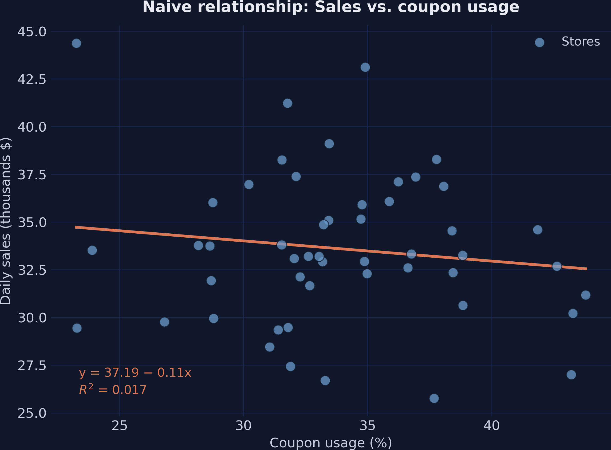
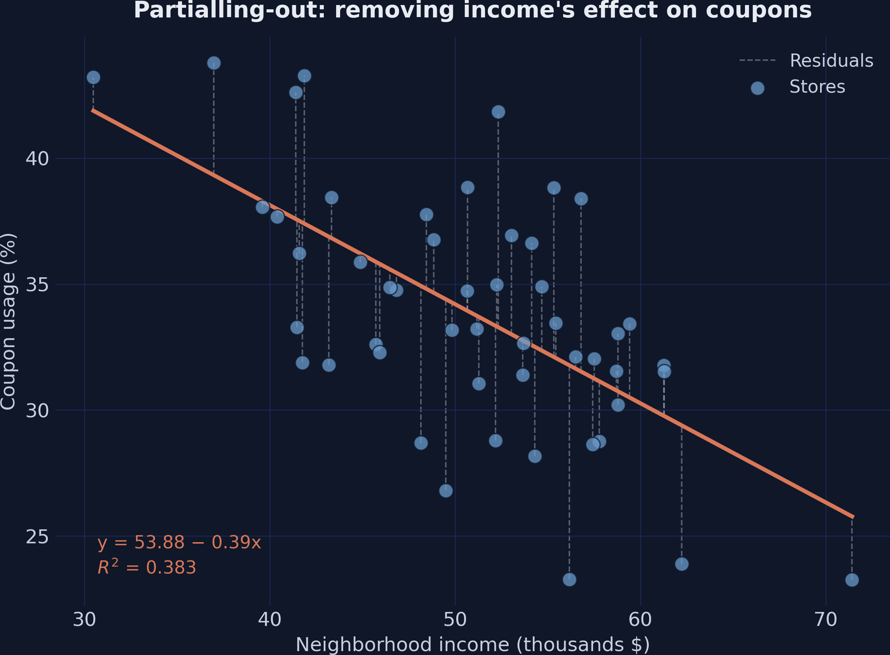
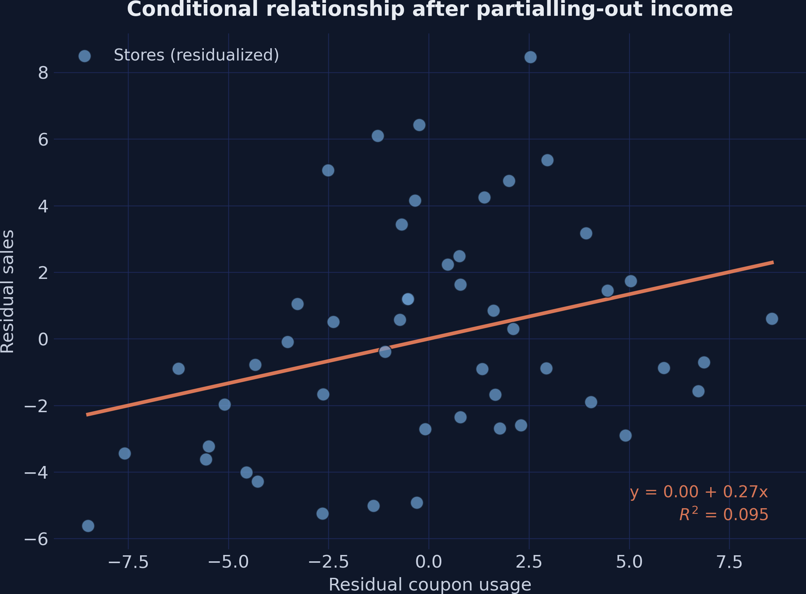
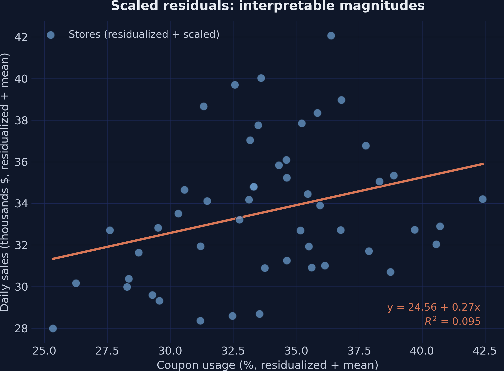
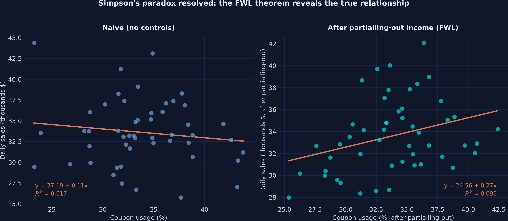

Partialling-out a confounder to recover a known +0.2 causal effect
Nagoya University (GSID)
June 11, 2026
Act I
A retail chain hands out discount coupons across 50 stores and asks one question: do the coupons increase sales?
Regress sales on coupons and the slope is negative. Add one control and it flips positive. Which answer is real?

Daily sales vs. coupon usage across 50 stores. The orange fit slopes down — coupons appear to hurt sales.
Act II
The path coupons ← income → sales is non-causal. Leave it open and the negative income→coupon link leaks into the coupon slope.
def simulate_store_data(n=50, seed=42):
rng = np.random.default_rng(seed)
income = rng.normal(50, 10, n) # the confounder
coupons = 60 - 0.5 * income + rng.normal(0, 5, n) # income → fewer coupons
sales = (10 + 0.2 * coupons + 0.3 * income # true effect = +0.2
+ 0.5 * dayofweek + rng.normal(0, 3, n))
return pd.DataFrame(...)We plant the answer (+0.2) in the data, then check whether each estimator finds it.
| Model | Coupons coef. | SE | p |
|---|---|---|---|
| Naive OLS (no controls) | −0.1059 | 0.116 | 0.365 |
Not just imprecise — the sign is backwards from the true +0.2. The confounder is pulling it down.
| Model | Coupons coef. | Income coef. | p |
|---|---|---|---|
| Naive OLS | −0.1059 | — | 0.365 |
| Full OLS (+ income) | +0.2673 | +0.3836 | 0.031 |
Conditioning on income blocks the backdoor: the estimate jumps to +0.267, close to the true +0.2.
\[\hat\beta_1^{FWL}=\frac{\mathrm{Cov}(\tilde y,\ \tilde x_1)}{\mathrm{Var}(\tilde x_1)}\]
where \(\tilde x_1\) is the residual of \(x_1\) (coupons) regressed on \(x_2\) (income), and \(\tilde y\) is the residual of \(y\) (sales) regressed on \(x_2\).
Remove income from coupons, remove income from sales, then regress the leftovers. Same \(\hat\beta_1\).
Residuals are mean-zero, so we drop the intercept. The coefficient on coupons_tilde is the controlled effect.
| FWL step | Coupons coef. | SE | p |
|---|---|---|---|
| Step 1 — residualize \(x_1\) only | +0.2673 | 1.271 | 0.834 |
| Step 2 — residualize both | +0.2673 | 0.118 | 0.028 |
Same coefficient to four decimals; residualizing the outcome too restores the SE to match full OLS (0.120).

Coupon usage vs. income; the orange line is the income→coupons fit, dashed lines are the residuals each store keeps.

Residualized sales vs. residualized coupons. With income removed from both, the slope is the +0.267 conditional effect.

Same residual scatter shifted by the sample means — axes now read ~34% coupons and ~$33.6K sales, slope still +0.267.
| Model | Coupons coef. | SE | p |
|---|---|---|---|
| Full OLS (+ income + day) | +0.2706 | 0.119 | 0.028 |
| FWL (+ income + day) | +0.2706 | 0.116 | 0.023 |
Partial out income and day-of-week from both sides — identical coefficient. The theorem holds for any number of controls.
Act III
+0.267
\(\hat\beta_1\) on coupons, full OLS = FWL (SE 0.118) · matches the true +0.200 within finite-sample noise

Left: naive negative slope. Right: positive slope after partialling-out income. Same 50 stores.
| Method | Coupons coef. | SE | p |
|---|---|---|---|
| Naive OLS (no controls) | −0.1059 | 0.116 | 0.365 |
| Full OLS (+ income) | +0.2673 | 0.120 | 0.031 |
| FWL residualize \(x\) only | +0.2673 | 1.271 | 0.834 |
| FWL residualize both | +0.2673 | 0.118 | 0.028 |
| Full OLS (+ income + day) | +0.2706 | 0.119 | 0.028 |
| FWL (+ income + day) | +0.2706 | 0.116 | 0.023 |
Objection. Residualizing on income looks like a trick that manufactures a causal effect.
Response. FWL is pure algebra — it only reproduces what OLS already computes. The causal reading needs one assumption: income is the only confounder. FWL pictures that adjustment; it cannot certify it.
Same residualize-then-regress logic; swap OLS for a flexible learner and you get a debiased causal estimate.